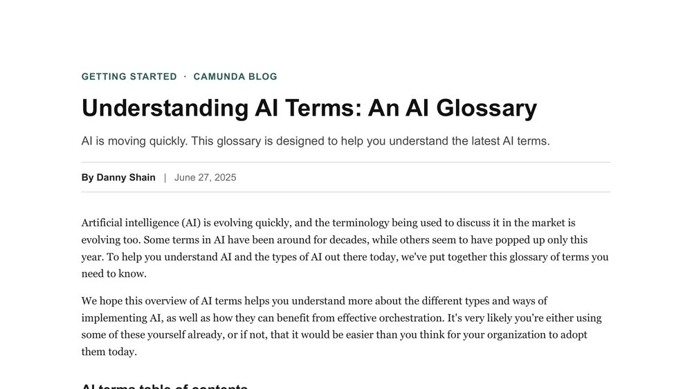

I
I've been writing about technology for 15 years, and building content programs in B2B tech for over a decade. I translate complex ideas into writing that earns trust and gets discovered. My work spans startups and large enterprises, and I've designed content for technical, business, and mainstream audiences. Across developer tools, enterprise software, and agentic AI, I've built successful editorial programs for companies like Camunda, Applitools, and Progress Software.
I've always been half techie, half writer, and being able to understand—and report on—the data that drives strategy is a critical part of my programs. These days, with AI, I don't just operate a tech stack, but also build my own tools, designing agentic systems that do real work and get smarter over time.
600%
YoY AI-sourced traffic growth at Camunda
60%
Organic growth in 6 months at Applitools
140%+
Monthly traffic increase at Progress Software
Portfolio
Spanning AI thought leadership, enterprise case studies, developer tutorials, and educational SEO, written for technical, business, and mainstream audiences.

Playwright vs Selenium: What are the Main Differences and Which is Better?
View Article
Reinventing Fraud Detection: NatWest's Journey to Operationalize AI with Camunda
View Article
Orchestration vs Automation: Differences and Use Cases
View Article
Understanding AI Terms: An AI Glossary
View Article
Reflections on the Gartner IT Symposium in Barcelona
View Article
UI Testing: A Getting Started Guide and Checklist
View Article
What is Visual Regression Testing?
View Article
Top Advantages and Disadvantages of Microservices
View ArticleLet's connect
Open to content marketing and strategy roles in B2B tech, with a focus on SEO, GEO, thought leadership, AI-driven automation, and editorial programs.